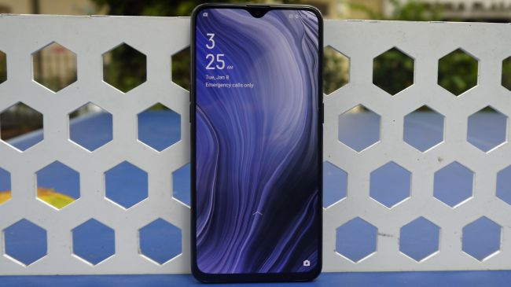
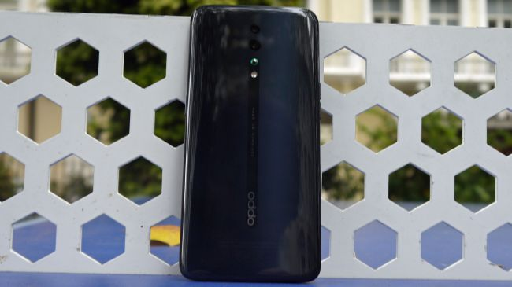

|
 |
The Oppo Reno Z misses out on several of the impressive specs and features of the main Reno line. The Oppo Reno Z, by comparison, is rather vanilla by Oppo’s standards: it has a ‘tear-drop’ notch instead of the pop-up camera found on the above phones, two cameras instead of three or four, and a mid-range chipset. So the device fits into the niche of ‘Lite’ phones from otherwise high-end or mid-range brands, alongside similar offerings from Huawei, Honor, Xiaomi, Google, and many other manufacturers, and it’s got a lot of competition in that regard.
|  |  |
| Front View | Back View |
|---|
The Oppo Reno Z dimensions are 157.3 x 74.9 x 9.1mm, so it’s barely bigger than the base Oppo Reno, and at 186g it’s only 1g heavier. The front and back of the device are Corning Gorilla Glass, with a plastic frame in between. The device feels nicely streamlined. There’s no camera bump on the rear of the phone, as the lenses are set flush with the body of the phone, rather than being housed in a protruding ‘bump’, so the only feature you can feel on the back is the O-Dot, a small bump just below the cameras, included so that the lenses won’t get scratched if you lay the phone flat on a surface.
It’s a 6.4-inch display, which is a touch on the large side, so it might be tricky to use if you have smaller hands. The resolution is 1080 x 2340, with 402 pixels per inch, so the resolution and overall quality are as good as you’ll get on the best from Apple or Samsung. On top of the high screen quality, you’ll find an in-screen fingerprint sensor, which is far from a certainty at phones of this price tag. It’s a useful feature that makes opening your phone quick and easy, and the presence of the tech in the Reno Z is a pleasant surprise.
The Oppo Reno Z runs Oppo’s ColorOS operating system over Android 9. It’s certainly not the most garish user interface we’ve seen from a Chinese phone brand (we’re looking at you, Huawei), despite the screen quality boosting its colors.ColorOS feels quite simple and straightforward to use – icons in the pull-down menu and in settings screens are fairly big and easy to tap, and the default mode shows all installed apps over multiple pages on your home screen, although you can switch to a drawer mode if you prefer. As with most UIs, gesture navigation is an option, and we found this fairly reliable.
When we put the Oppo Reno Z through a benchmark test it returned a multi-core score of 6,816. That’s decidedly middling, but the Reno Z is a budget device, so a middling score is quite respectable compared to other devices at this price point. Conversely, the device’s chipset isn’t anything to write home about. It’s a MediaTek Helio P90 processor, and MediaTek chipsets are typically reserved for budget phones such as the Reno Z. This explains the slightly slow-feeling UI, although it’s possibly the least sluggish a MediaTek chipset has felt in a long time.
The Reno Z has two rear cameras. The first has a 48MP sensor and f/1.7 lens, and the latter is a 5MP f/2.4 depth-sensing camera. If these specs sound familiar, it’s because they’re the same as the Oppo Reno. No, there’s no ultra-wide-angle or telephoto lens, which are both staples of most modern smartphone cameras (on mid-rangers and above, and even at this price point), and you can feel their absence when you use the device.
| Processor | MT6779 Helio P90 |
|---|---|
| Screen | AMOLED 6.4 inch 1080 x 2340 pixels, 19.5:9 ratio (~402 ppi density) |
| Battery | 4035mAh |
| Software | Android 9.0 (Pie); ColorOS 6 |
| Camera |
|
It’s hard to find much to dislike about the Oppo Reno Z – while some features could be better, like the chipset and camera, they’re far from bad. Throw in the impressive design and display and you’ve got a fantastic phone, particularly given its budget price tag.
| Pros | Cons |
|---|---|
|
|